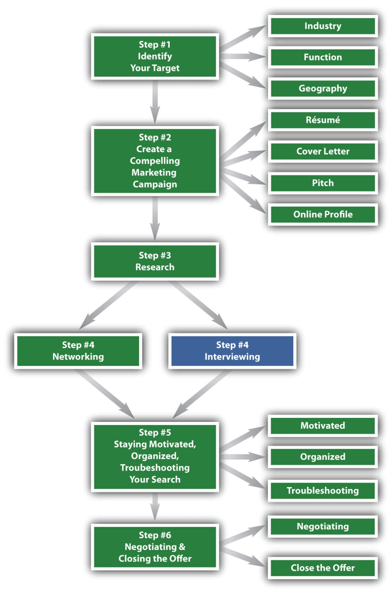

Figure 8.1 The Six-Step Job Search Process—Step 4 Continued
You Can Become an Exceptional Interviewee
You have now completed three full steps of your job search and half of the fourth step. You have accomplished four things:
The second half of step 4 focuses on the interview process. Networking and interviewing are paired for two reasons:
Each interaction with a company representative is a mini-interview. Future employers are constantly evaluating your behavior at every stage of the job search. For example, when they call you to discuss the potential of having a face-to-face interview, they note how you answer the phone and how you follow up. When you e-mail them information regarding your candidacy, they evaluate your writing ability and communication skills. While an interview is a formal meeting to evaluate your candidacy, the real interview begins much earlier.
An interview can be defined as a conversation between two or more people in which the interviewer asks questions to obtain information from the interviewee. A better definition might be an exchange of information between the interviewer and interviewee to assess if a match exists between a job’s requirements and a person’s skills and abilities.
The second definition is much more proactive in the case of the interviewee. As an interviewee, you should not passively answer questions, but should employ strategies so you are presented in the best possible light. As an interviewee, you also are responsible for highlighting your strengths in the interview and giving answers that are detailed and results oriented. This chapter will give you such strategies.
Key strategies for a successful interview will be explored in depth in this chapter, but as an overview, you should have three goals:
Know Yourself. Know your strengths well enough to match them to relevant job descriptions. If you have strong analytical skills, then analyst or accounting positions may be of interest. If you have strong client-service skills, perhaps a career in retail would be a great match. Knowing yourself allows you to target positions accurately, which then results in successful interviews and suitable positions.
Know Your Résumé. You should be intimately aware of every detail on your résumé, including all past projects and the quantifiable results of those projects. If you are stumpedNot knowing what to say when asked about a particular item or action. on a question about your résumé, then it’s almost guaranteed that you will not get a second-round interview.
Know the Company, the Position, and the Industry. The third job search strategy focuses on research. You should know extensive amounts of information about the industry, the company, and the position before the interview and be knowledgeable enough to speak fluently about the company, its goals, and its ranking among its competition.
Structure of a General Interview. An ordinary thirty-minute interview could have the following structure:
Although the preceding structure is the most common, you shouldn’t expect this at all times. Interviews can veer from this typical structure for several reasons:
Your Interview Strategy—Prepare and Practice. Multiple strategies will be reviewed to increase the chances of success during and after an interview, but the main strategy focuses on preparation. Prepare ahead of time and control what you can, so if something happens to throw you off your game, you will be much better prepared to deal with it.
The more prepared you are, the better you will perform. It’s a universal truth that works for any skill or sport. If you play softball, you will be a better softball player if you practice as much as possible. It’s the same with interview skills: the more you practice, the better your skills will be. Many other strategies can help you prepare, including knowing the types of interviews, interviewers, the types of questions you will be asked, and the types of questions you can ask. Being prepared will strengthen your interview skills, which, in turn, will strengthen your chance of receiving a job offer.
The Interviewer. The interviewer has a very important job: they need to find the very best talent. Interviewers build their reputations on the quality of the individuals they hire. The stakes are high for you as well as the interviewer.
Preparation on your part is critical as well. You probably hope every interviewer you meet is skilled, but that may not always be the case. If your interviewer is not an expert in the interview process, you should be prepared to highlight your strengths no matter what questions are asked. Again, preparation is vitally important. This chapter will give you the best strategies to prepare for meeting any interviewer, regardless of their skill level.
An interview is framed by what happens before, during and after.

What happens before an interview will help you succeed. This includes taking the following steps:
Before you even walk into the interview room, you need to assess a few things:
It’s vital that you know your strengths and weaknesses because you should compare them to the job description. Is there a match between what they are looking for and your skills and abilities? If some of a job’s most important skills and abilities appear in your weakness column, there is no match. If your top three or four strengths appear in the job description, there is an obvious match.
A huge difference exists between spending your entire workday interacting with people versus sitting in front of a computer screen analyzing data all day. Creating a spreadsheet (or a dashboardA concise, one-page document that includes several points of interest.) that highlights sales figures and presenting that to your boss weekly is vastly different from standing in front of a group of twenty to thirty peers and managers and presenting that data.
You must know your likes and dislikes because a workday can be long, and you should at least like most of what you will be doing. Some people are motivated by the amount of money they will make in a job, however, and if that works for them, it’s sufficient. It’s also important, however, to like the type of work you will be doing. It makes for a miserable day, week, month, and year if you do not.
College internships are key because they expose you to work you might like, as well as work you definitely would not like. Having as many internships as possible is a goal every college student should have. It may be helpful to know that the vast majority of companies hire mostly juniors because they will graduate in one year and some companies would like to extend full-time offers to their summer class. But don’t let that dissuade you from seeking an internship if you are a freshman or sophomore. It may be more difficult to obtain an internship, but it’s definitely worth the effort if it gets you closer to what you do or do not want to do on a full-time basis.
While in college, it’s beneficial if your internships help you understand exactly what you want to do, and exactly what you need to do to get there. For example, if you are interested in marketing, you might have a sophomore internship at an advertising firm. You might end up doing mostly administrative work, but you get some exposure to the creative team. One of the team members allows you into a couple of meetings (with your manager’s permission), and you experience what their job is like. This is it for you! This is what you want to do.
Your next logical step is to discuss with your manager if the next summer is a possibility, especially if you could work with the creative team. You hope your manager is so impressed with your work, your attention to detail, and your passion that you receive the open slot next summer in the creative department. If you aren’t guaranteed a job the following summer, make it your goal to target more advertising agencies and garner a job in a creative group. The more directed you are, the more likely it is you will get the job you want.
Preparation is key to succeeding in the interview process. The following steps will help you get a second round of interviews:
Completing the research step ensures that you have fully researched the company, the industry, and the competition. Knowing how to interview well within the industry and company will help you get a second interview. You also might be able to research the interviewer using Google or http://www.linkedin.com. Having relevant background information might give you helpful hints on how to position yourself.
The section of this chapter titled “Different Types of Questions” has a detailed list of the top questions asked during an interview and strategies to succeed with each question. Pay close attention to that section to help you prepare for an actual interview. For now, before you practice actual questions, you can do four things:
Being prepared reduces stress and improves performance. Here is a checklist of things to do and consider before your interview day.
Getting lost on the way to an interview will only increase your stress, so know exactly where you are going, even if you must make a trial trip. Few things are worse than being late or arriving looking like you just did the one hundred-meter dash.
The most successful interviewees have a routine that includes the following:
The moment you have been waiting for has arrived—the actual interview. Keep six things in mind:
It is important to be aware of nonverbal impressions such as your handshake, eye contact and eye movement, posture, and facial and hand expressions. A sizeable percentage of what we communicate comes via body languageNonverbal impressions such as handshake, eye contact and eye movement, posture, and facial and hand expressions. It is generally accepted that a sizeable percentage of what we communicate comes via body language.:
Maintain good eye contact throughout the interview. It’s OK to look away occasionally, but, for the most part, eye contact should be steady. It shows confidence and inspires trust in all that you say.
When you are feeling stressed, a smile usually relaxes your face, which usually helps you to relax overall. An introductory or occasional smile shows that you are enjoying the conversation, and it adds to your confidence factor.
Practice your handshake. The Goldilocks approach is best: Don’t crush the interviewer’s hand, but don’t give a soft, floppy handshake, either. Your handshake should be firm and businesslike. If you get nervous to the point of having a sweaty palm, wipe it against your pants leg or skirt just before you shake your interviewer’s hand.
Sit up straight with your shoulders back and your feet firmly planted on the ground. It’s fine to cross your legs if you feel more comfortable doing so, but avoid looking too relaxed. You should be poised and fully focused on the interviewer, ensuring that you answer all questions to the best of your ability.
If you’ve met others in the company, mention that up front. It’s a great way to open an interview because you establish that you’ve already met others at the company, and the interviewer also can contact them for feedback.
The more focused you are during an interview, the more successful you will be. Focus on the question asked and answer it directly. If you think you’ve gone off course for any reason, it’s OK to ask the interviewer if you are on the right track. Your answer should have a beginning, a middle, and an end that includes a real, tangibleSomething real and measurable., and preferably positive result. Here is an example of a question asked and an effective answer:
Question: Jenna, what was your biggest contribution to the company you interned with last summer?
Answer: Throughout the summer, we had approximately five to six team meetings where the entire staff of ten engineers and their direct reports were present to discuss the major goal of the summer: the construction of a new courthouse.
I was tasked with drafting the agenda of these meetings and the agenda notes, which verified all that was discussed and agreed upon. The agendas directed complex meetings, and the agenda notes served as key documents that verified and clarified what was discussed and agreed upon during the meetings.
My first draft of the first agenda was much too broad, but with feedback from my manager, I ensured it included all the details necessary to hold a productive and effective meeting and created the structure for the agenda notes document. The agenda notes were typically three to five pages long, and by the second meeting, I was drafting the agenda and publishing the notes without any revisions from my manager.
I received exceptional feedback from several department heads because, in many instances, the notes saved countless hours of work. For example, during the third meeting, we reversed course on a previously agreed-upon strategy for the front columns of the courthouse. One of the key assistant engineers was not at the meeting, and when her peer brought her up to speed, he forgot to mention that the columns were changed from the Roman style columns to the Grecian columns, which needed a more intricate support system from the roof to the courthouse steps. Luckily, she read my agenda notes, which highlighted any course changes in red, and saved about two weeks’ worth of work, which was easily several thousand dollars. It also kept everyone on track regarding the completion date, which is June 2014.
To improve this process overall, I loaded the agenda and the notes into the department’s central files so instead of relying upon hard copies or e-mailed copies, everyone had one place to go for this important document that kept everyone on track. They are still using the improvements I implemented, so I’m very proud of that.
The answer’s beginning set the stage:
Notice it had a middle that allowed you to understand how things were working:
Positive momentum was built throughout the answer, and Jenna shared the positive results of her work:
Never misrepresent anything about yourself during the interview:
Interviewers have a way of discovering any misrepresentations, so save yourself misery and humiliation by being authentic and honest.
This important step in the interview process is relatively easy and can be done in advance of the actual interview. Use the research you’ve already conducted to formulate five to seven questions you’d like to ask at the end of the interview. Table 8.1 "Topics and Potential Questions" includes some topics and potential questions.
Table 8.1 Topics and Potential Questions
| Topic | Question |
|---|---|
| Goals of the company, division, department | I understand that your main goal is to complete X. |
| Are you pleased with your progress so far? | |
| Goals for the position | I understand that should everything work out and I receive the offer, I would be responsible for Y. |
| Would you expect that I will be able to do that in one month, three months, or six months? | |
| Training program | Is there any training I would receive prior to my first day? |
| Would I receive ongoing training, or is it basically on-the-job training? | |
| Critical skills needed | What two or three skills do you think are absolutely necessary to succeed in this role? |
| Culture of the company | I’ve researched your website and learned that the culture is x, y, and z. |
| Would you agree? Can you add anything to this? | |
| Questions about the interviewer | How did you get your start in this business? |
| What are you most proud of in your time at this company? | |
| What is the one thing about this company that you are most focused on improving? | |
| To what do you attribute your success at this company? | |
| Additional questions | I read the speech the chairman gave at the X conference last month. In that speech, she mentioned the importance of leadership and that this company is building a strong bench strength of leaders. How is that being done? |
| I recently read a few articles about this company in The Wall Street Journal and on BusinessWeek’s website. The articles seemed to say X. Do you agree? | |
| I see that the stock has held steady lately. Can you tell me what you think caused this increase (or decrease)? |
Remember to do two things when preparing your questions for the interview:
Match the proper questions to the proper interviewer:
Research everything you can before the interview:
Your final interview question should pertain to the next steps you should take so you will know how to follow up. Be certain your last question accomplishes the following:
You can take definite steps after an interview to improve your chances of being called back for a second round or getting an offer for the position. Four steps increase your odds:
E-mail, versus a handwritten note, is preferred for many reasons:
Some individuals believe a handwritten note distinguishes you from others; while that may be true, you never know if it arrived. You could send an e-mail and a handwritten note to cover all the bases, but don’t use the exact wording for both notes. Using a high-quality, professional notepaper or stationery is recommended.
Figure 8.2 "Sample Thank-You Note 1" is a sample thank-you note an employer received after a first-round interview.
Figure 8.2 Sample Thank-You Note 1
Figure 8.3 "Sample Thank-You Note 2" and Figure 8.4 "Sample Thank-You Note 3" are additional examples of a thank-you note.
Figure 8.3 Sample Thank-You Note 2
Figure 8.4 Sample Thank-You Note 3
If you’ve met other people during your job search and they’ve been helpful in any way, send them an e-mail update as to how you’ve progressed. It will mostly likely be shared with others, so take great care when writing any note to a company representative.
Once you’ve interviewed for a position, note your expected follow-up on your calendar. If the company representative said you will be contacted in a week, mark that on your calendar. If you aren’t contacted, add another three or four days onto your calendar and then follow up with the company. After that, maintain consistent communication to help produce positive results.
Different ways to keep in touch include the following:
You should be working on no fewer than ten targets to ensure you have activity because some targets will get cold, while others get hot. The recruiting process is, to a large extent, a numbers game. Having more companies in play increases your chances of success.
Sometimes no matter how well you prepare, something still goes wrong. The following strategies will help you manage when things go amiss:
You can experience three main types of interviews. Become familiar with each type and you will be more prepared and more successful:
The vast majority of interview candidates will participate in a behavioral interviewThe most popular form of interviewing, as it is based on specific past performances versus hypothetical situations. Behavioral questions follow the premise that past behavior is a clear indicator of future behavior.. Behavioral questions focus on past performances versus hypothetical situations, following the premiseA logical conclusion. that past behavior is a clear indicator of future behavior.
Later in this chapter, a comprehensive list is presented of the most-asked behavioral questions, along with strategies to answer them. Just about any other question asked is a derivative of these questions, so carefully review that section and practice your answers. Questions will relate to aspects of your past work and educational experiences. Here are four typical behavioral interview questions:
The following strategies will help you answer behavioral questions successfully:
Case interviewsCase interviews are used to understand a candidate’s ability to problem solve and develop a strategy to solve a difficult situation. are predominately used in management consulting, though they are sometimes used in a variety of fields, including financial services, healthcare, consumer products, and education. A case interview is a hypothetical business problem, or case, that the interviewee is expected to solve during the interview. The case tests a variety of the interviewee’s skills and expertise, including analysis, logic, structuring of a problem, math, accounting or economics knowledge, specific industry knowledge, communication, creativity, and ability to deliver under pressure.
Case interviews might include short questions to estimate the size of a market:
The interviewer does not expect you to know the specific answer, but that you estimate a final answer based on different facts (e.g., the population of the United States). The interviewer wants you to break down this broad request into smaller steps that can be calculated to see how you structure a problem. The interviewer is also testing your basic math skills and ability to work under pressure. The following information applies to the question on hiking boots:
Remember that the interviewer does not expect a specific answer, but rather wants to see the process you follow to estimate the answer.
Case interviews might also be as long as thirty to forty-five minutes of broad strategy or operations questions about a detailed problem. You may be asked how to manage a hypothetical teaching situation. You may be given a hospital scenario and asked how to streamline processes. You may be given data about the company or industry involved in the question presented. You may be asked to review charts, accounting statements, or other background material, such as in the following question: The CEO of a leading national toy company is considering acquiring a popular neighborhood toy shop in Austin, Texas. How would you advise the CEO whether or not to purchase the shop?
You might then be given more information about the national toy company, or you might be expected to ask for what you need. The questions you ask are part of what the interviewer is testing because your questions reveal the types of data you think are important to assess to make the purchase decision. You are trying to assess if the neighborhood shop fits into the national company’s strategy, and, if so, whether the cost of buying and integrating the neighborhood shop will be offset by potential future revenues.
Many large consulting firms, such as McKinsey and Bain, put sample cases and solutions on their websites. Books also offer sample cases and solutions. Many schools offer case-preparation workshops via either career services or extracurricular consulting clubs. Case interviews are very different from general job interviews but are rarely used except for management consulting jobs. Therefore, don’t spend any time preparing for case interviews unless you want a management consulting job. If you do want a job in management consulting, case interview practice is absolutely necessary. You will not get hired by a consulting firm without successfully completing several case interviews.
If you are interviewing outside the consulting industry, meet with a friend who is in your chosen profession. Ask them to tell you about when they were interviewed, and ask them to interview you. This can be a tremendous learning experience and can prepare you for success, so your time will be well spent in arranging a mock interview ahead of time.
Informational interviewsEnable you to gather important research about your desired job. An informational interview is an opportunity for you to ask five to ten questions of someone who is performing the very job you think you want to perform or someone who started out at the same level at which you want to start your career., by their very name, give you the opportunity to gather information about the career you think you want to pursue. The more prepared you are, the better your session will be because the best informational interviews are two-way exchanges, more like a conversation than an interrogation. Your research will allow you to share vital information with your interviewer, and you both will benefit from the time spent.
Some informational interview questions focus on the interviewer:
These types of questions establish rapport and will help you dig deeper and learn more about the job, the industry, and the career.
Some informational interview questions focus on the job and career:
Perhaps the most important question to ask during an informational interview is this one:
Typical informational interviews lasting about thirty to forty-five minutes can be a vital part of the research you conduct to ensure you are targeting the right types of jobs.
One of four methods might be used to interview you:
Live, or face-to-face, interviews, are the most common interview interaction. An increasing trend of recruiters is to pair up with another colleague and have two or more interviewers per interview candidate. Many candidates will end up interviewing before a panel of interviewers, so be prepared for that to happen as well.
You will need to employ all of the strategies outlined earlier in this chapter, in the section titled “Different Types of Interviews.” In addition, here are some specific strategies to employ when you are interviewing with one or more interviewers.
When you are interviewing with only one person, the focus is clear—it’s on one person. Ensure your nonverbal and verbal communication is focused, positive, and results oriented. The more you practice, troubleshoot, and improve, the more you will succeed.
If you are interviewing with two or more interviewers at the same time, focus and practice are just as important, but you can employ a few additional strategies:
Phone interviews are just as important, if not more so, than face-to-face interviews. In down economies, more companies choose to conduct interviews via the phone versus face-to-face to save time, money (if they have to pay your expense to come to their office), and effort. So preparation and practice are key to succeeding on the phone.
Prepare for a phone interview (similar to a regular interview) by taking seven important steps:
Phone interviews have several advantages:
You can focus more on the actual questions because you have fewer distractions:
You can treat the interview like an open-book test and have several items at hand to help you:
Since many companies save time and money by conducting phone interviews, spend the time now to master success strategies as it will benefit you in the long run!
Phone interviews have some disadvantages:
Strategies for a successful phone interview include the following:
Ensure your office or interview space will be quiet and uninterrupted.
Dress up even though you don’t have to:
Stand up during the interview:
Remember that body language is important:
When you are at a more senior level, interviews might take place with someone in a different city, state, or even overseas. In such a case, a videoconference or SkypeA software application that allows users to make voice calls over the Internet. Calls are free if both participants use Skype. Skype has also become popular for its additional features, including videoconferencing. interview may be used. You will be seated in front of a computer with a camera and your interview will be live via that camera.
Strategies to succeed during a videoconference interview include the following:
Taped interviews are so rarely used that you probably will not encounter them. They are primarily used to hire a large number of people for the same exact position, for example, sales positions. If a company has a goal to hire one hundred or five hundred salespeople, a taped interview saves them time in reviewing candidate answers, since all the questions might be the same. Taped interviews are also helpful when hiring salespeople in different parts of the country because taped interviews save the enormous expense of flying interviewers from city to city to find the best possible candidates.
Companies that use taped interviews may direct you to a satellite officeRegional offices that are not the headquarters of a company. where the taping takes place. You would be seated opposite a computer or computer kiosk, and you would be given an overview of the process. Taped interviews could involve timed responses, so the pressure could be high. Remember these types of interviews are rare, but it is good to know they exist and how they are formatted.
Strategies to succeed in taped interviews include the following:
Knowing the four different types of interview venues will help ensure your success:
If your interview takes place on campus, you will probably receive instructions from your career services office regarding the date and time of the interview. Check with the office to ensure you know how you will be notified. Most career services offices have a general check-in area, a waiting area, and very small interview rooms. It’s best to practice in these rooms ahead of time, so you know exactly what to expect. Some rooms are literally five feet by five feet.
If your interview takes place off campus, the company with which you are interviewing will send instructions regarding where to report and when. Ensure you know exactly how to get there, and arrive early if at all possible because you probably will need to go through security. Bring the interview schedule with you; it should include the name(s) of the individuals with whom you will interview and their contact information.
If you need to travel via train or plane to an interview, dress professionally on the way there. Wearing yoga pants and flip-flops doesn’t make a good impression, and there is always a chance you will bump into company representatives during your trip.
Most often, candidates will be interviewed in the interviewer’s office, but there are times when you will be interviewed in a conference room. Some conference rooms are glass-enclosed areas, and it can be distracting to interview as individuals look in and walk by. Regardless of the setting, maintain your focus on the questions asked and the interview at hand.
Mealtime interviews can be tricky situations because food and drink are involved. Strike a healthy balance of not being ravenous but not leaving your plate untouched either. Focus your full attention on the conversation and interview at hand. It is wise to stay away from messy marinara sauces and long strings of pasta because they can easily stain your clothing. Forgo alcohol at all costs and certainly if you are not of legal age to consume alcohol. If you are not comfortable with dining etiquette, familiarize yourself with it to increase your comfort level. Know which fork is correct to use for salad versus dinner. Research this so you are prepared in advance. Interviews that take place during a meal can heighten nerves and cause you to spill a glass of water, which doesn’t bode well for your confidence level. Practice can only help, so try to attend a dining etiquette class or study proper techniques to ensure a good impression.
No matter what the venue, dress well and take extra copies of your résumé, a portfolio with paper and a pen that works, a list of questions you will ask, and perhaps a bottle of water just in case you need it.
Interviewers are most likely to ask one of four types of questions:

Lastly, we’ll review illegal questionsDiscriminatory, including questions that touch on the following information: age, birthplace, childcare arrangements, ethnicity and race, disability, marital and family status, national origin, and religion. that hopefully will not be a part of your interviews.
Open-ended questions don’t have specific answers. They include questions like the following:
Such questions present an opportunity to tell your story in an engaging, articulate, and compelling way. Explain why you selected the school(s) you selected, your major and your minor, and your GPA (if it’s above 3.3). Describe the jobs you’ve had and how you got them. Did you apply directly or did you get them through networking? What were your most significant accomplishments at each job? Highlight significant accomplishments that may or may not be explicit in your résumé. Often, a theme will emerge, but if that isn’t the case, talk about your decisions in a positive light.
If you enjoy working with clients, talk about your specific achievements and how you helped your clients. Have you served them well enough for them to be repeat customers? Have they referred other clients to you? If you are very strong analytically, give an example of the most analytical project on which you’ve worked and the project’s outcome.
Everyone has strengths and everyone has weaknesses. You should do a substantive assessment of your weaknesses prior to an interview. A weakness should never be a critical component of the job for which you are applying. If there is a trick to answering this question effectively, it’s to highlight what you are doing to strengthen each weakness. For example, if public speaking is something you consider a weakness, you can say that to improve this, you raise your hand as much as possible in class, and you volunteer to present whenever possible. The more prepared you are with the content of your presentation, the better you perform.
These questions present an opportunity to enthusiastically and specifically discuss what you enjoy doing in your spare time. If you enjoy tennis, talk about how long you have been playing and your favorite player. If you enjoy reading, mention the last great book you read.
Specific questions have concrete answers and might include the following:
You must be able to quickly and completely discuss any topic from your résumé and its relevance to your professional career. You should be able to recount every detail about each project, and enthusiastically relay those details to your interviewer. If you are not enthusiastic about your work, they will not be either. Also highlight the result of your work or any project about which they want to know more.
When answering this question, remember who sponsored the project, the project’s objective and deliverable, steps you took to complete the project, and the results of your efforts. Note your role as well as the roles of other team members. Be specific and quantify the results.
Everyone has worked on projects where something went wrong. If we procrastinated, we learned to become more disciplined in our approach to projects. If someone didn’t do their part of the project, which then caused us to do extra work, we learned to communicate more clearly and check the project’s progress on a regular basis.
We also have worked with difficult clients. The trick is to not say anything negative about a client. If a client was demanding, remember that all clients have a right to make demands. We need to raise our game to ensure they are pleased with the service and our level of professionalism. Never make negative comments about a client, a boss, a peer, or a company. Doing so sends an immediate red flag to the interviewer, so avoid such negativity at all costs. Position everything in a positive light, which can only help your candidacy.
Interviewers want to know that you are knowledgeable about current events, especially those pertaining to their industry. The very best candidates are well versed in the current news, so be prepared to discuss one or two items. It’s important that you cite the source of the news and what you learned from it. If you did subsequent research about the topic, discuss that as well. It’s an opportunity to highlight your research and your passion for this industry.
Interviewers often want to know about a candidate’s motivation by asking the following questions:
The most savvy interviewers know that the best candidates interview with multiple companies. Many candidates are comfortable discussing specific companies with which they are interviewing, and, from a recruiting perspective, it’s fine to mention the company names. If you would rather not discuss this, mention that you are currently interviewing with other companies, but this company is your number one choice and highlight why you want to work there. They should get the hint that you don’t want to mention specific companies.
No matter what company is interviewing you, ensure that you know why you want to work for that particular company. Know their strong points and know their competitors. Know clearly why you want to work for them versus their competitors.
Your research will help you answer this question. If you’ve conducted some informational interviews, you will have a clear idea of what a career can look like in one, five, and ten years. It is also important to network with peers who have interned at the companies in which you are interested because they can share specific information with you. For example, consulting, investment banking, and brand management have well-defined career paths. Advertising has a defined career path, but it may not be as defined as other businesses and industries.
Additional sources of information on this topic can be gathered on various job-seeker sites such as http://www.vault.com and http://www.wetfeet.com. Career services can be a huge resource, as can alumni who are in the industries in which you are most interested.
This can be a make-or-break question because some interviews consist of just this one question. Every interview candidate should enter an interview with five to seven questions written down in advance. These questions should come directly from your research.
Answers to these questions will come from your research. Have a specific reason you want to work at the company doing the exact job for which you are interviewing. Is the brand name very strong, giving you an opportunity to work with the best? Is the brand name not yet a household name, giving you an opportunity to make it so?
It’s also important to know what skills you will gain in this specific position and which will enable you to be successful. Will the position strengthen your analytical skills? Will it enable you to become a subject-matter expert? Be specific in your answer.
Some interviewers may think you are too rehearsed and may want to inject a bit of stress; perhaps they want to shake you up a bit by asking what may seem to be crazy or certainly bizarre interview questions:
Note that these questions are rare and you probably will not be asked them, but since preparation is key, it’s worth examining why they are asked. These types of questions are asked to get a true glimpse into your personality. The “If you were a tree, what kind of tree would you be and why?” question could be answered the following way:

The two types of trees have very different characteristics, yet they both survive and thrive.
Unconventional questions have no correct answer, but when asked them, four strategies can help you succeed:
Illegal or discriminatory questions include references to the following:
If you are asked any question relating to the preceding topics, it could be for one of two reasons. Either the interviewer is asking an illegal question or the interviewer might not be well versed in interview techniques. Many hiring managers have not been formally trained in interview techniques, and that lack of training can result in asking an illegal question.
It is hoped that the question would be harmless enough so that you can answer it without feeling uncomfortable. If you feel uncomfortable answering something, tactfully say that the question doesn’t relate to the job. Try to move onto another question or ask a question pertaining to the job to get the interview back on track.
If you feel that you were subjected to discrimination, speak to someone at your career services office. They could provide the guidance necessary at this stage of your job search. If that is not possible, consult a friend or professor and ask for guidance in your next steps. This is not a matter to be taken lightly, so it’s important to get help from someone who is familiar with these issues.
A number of things can annoy an interviewer and must be avoided at all costs. The following includes a list of things you should not do. Mock interviews are especially helpful at this stage because sometimes candidates are not aware they are doing things that are clear turnoffs to interviewers, so proceed with caution.
Being unprepared is an insult to the interviewer who is investing their time and energy into meeting with you. You should be there on time, have several copies of your résumé in your portfolio, focus on answering any question asked, and have a list of questions to ask at the end of the interview.
Positive body language such as looking the interviewer in the eye and shaking their hand firmly when saying hello inspires trust. Poor body language can eliminate you as a potential candidate. Practice answering questions with a friend and look them straight into the eye. Smile when you talk about big goals that you have achieved. You may look away now and then, but for the most part hold their gaze throughout the interview. Sit up straight in an attentive position to help ensure you make a good impression.
Stress is a vital component of an interview because you want the job and you need to impress. Using that stress to perform better is key, and, with practice, you can appear more relaxed than you actually are. For example, if your palm sweats a bit, discreetly wipe your hand on your pants leg or skirt before you shake the interviewer’s hand. Preparing in advance usually lowers stress, but if you still need additional methods to calm yourself before an interview, try listening to soothing music before entering the building or read something inspirational before the interview. Taking deep breaths before you enter the building can lower stress a great deal.
If your interviewer asks for a one- to two-minute overview, don’t spend six to eight minutes regurgitating your résumé. Focus and listen carefully to everything the interviewer asks you. If they ask for a one- to two-minute overview, make sure you give them one to two minutes. If you feel you might be going on a tangent and not answering the question, it’s fine to ask if you are going in the right direction, or you can ask the recruiter to repeat the question and start over. Practice is important, even when you practice going off the topic.
The interview process is strenuous. If you interview with one person, it’s easy to keep your energy up. However, some interviews might be set up where you will interview with multiple people or several individual people throughout the day, and, in some cases, on different floors and in different buildings. Your energy level must be as strong and consistent with your seventh interview as it was with your first. To avoid waning energyYou start off at a high level of energy and your energy then trails off and lowers noticeably., bring a small bottle of water with you to help you feel refreshed. If your interview day will be several hours long, bring a small snack bar to help you stay alert.
Putting anyone or anything in a negative light is not a good strategy for an interview. Criticizing your past peers, boss, or company puts you in a negative light. Interviewers red flag any type of negative comment and might probe for more negative energy lurking in other interview responses.
Treat everyone you meet during the day with the utmost respect, whether it is the security guard, the administrative assistant, or the actual interviewer. Be respectful if you are trying to rush through security or if you are holding an elevator for someone. All of these individuals communicate with each other, and if you leave a bad impression with any of them, it could end your candidacy. Be courteous and kind to everyone you meet. Manners do count.
Control what you can control, and your interview will be more successful. This includes doing the following, but this list is far from exhaustive:
Remember that interviews are subjectiveAn interviewer can make up their mind based on nonscientific data. They can have a preconceived notion of you as a candidate that has nothing to do with your strengths. and that a second interview is never a guarantee. Budgets can shift and your targeted company may have to pull an open requisition. Perhaps the company wants to promote from within and they may hire an internal candidate. Many interviewers hire in their own image, regardless of any interviewer training course they may attend. No matter what happens at the end of your interview, it’s important to stay positive and it’s equally important to not take it personally.
Regardless of the interview’s outcome, and especially if you don’t get the job, thank the interviewer for the interaction. Continue to keep in touch because that person can become an important part of your network. Leaving a positive impression can only help your future prospects because jobs for which you would be a perfect fit might open in the near term. Remember also that recruiters and hiring managers tend to move from company to company, and there is a strong likelihood that your paths may cross again. Maintaining positive relationships can only help your career.
Lastly, if you interview for a position and you don’t get it, at least appreciate the value and practice of your experience. Troubleshoot what could have gone better and improve on that one thing. If you are proactive enough at strengthening your interview ability and ensuring you have enough interviews lined up, you increase your chances of getting a job offer. Once that happens, you will probably be in the interviewer’s seat before long.
Before you even think of interviewing, you must know three things:
Knowing what to do before an interview is key to your success:
Knowing what to do during an interview is critical:
Knowing what to do after an interview can strengthen your chances of getting the job:
Interviews can be one of three types:
Interviews can be conducted using different methods:
You need to be prepared to answer various types of interview questions in advance of the interview:
For tips and ideas about preparing for interviews, click on Interviews in the Advice and Research Section of the menu bar on the right. You may also want to review the demo using Perfect Interview, an interactive online interview practice feature under Interactive Features. (Note: There is a charge of $19.95 for unlimited use of Perfect Interview for sixty days.)